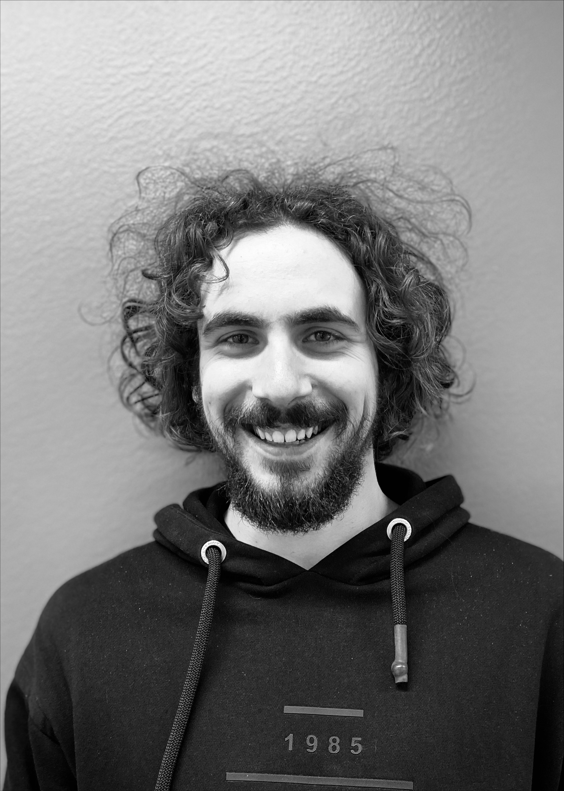

|  |
Bernard SpieglMSc StudentAalto University |
||
Contact |
About |
||
| I am a MSc Student at Aalto University pursuing a MSc in Signal Processing and Data Science with minors in Acoustics and Audio Technology and Human Neuroscience and Technology. I hold a BSc in Computer Science obtained at the Faculty of Electrical Engineering and Computing, University of Zagreb under supervision of Prof. Sinisa Segvic. | |||
Experience |
|||
| Aalto University | Research Assistant | Apr 2022 - Jun 2022 | |
| RealNetworks Inc. | Data Scientist Intern | Jul 2021 - Aug 2021 | |
| Koncar - Power Plant and Electric Traction Engineering Ltd. | Software Engineering Intern |
Jul 2020 - Aug 2020
Jul 2019 |
|
Research |
|||
|
Contrastive Unpaired Translation using Focal Loss for Patch Classification arXiv preprint - [PDF] |
|||
Education |
|||
| Aalto University | MSc in Signal Processing and Data Science | 2021 - 2023 | |
| Faculty of Electrical Engineering and Computing, University of Zagreb | BSc in Computer Science | 2018 - 2021 | |